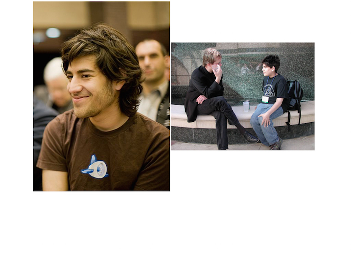
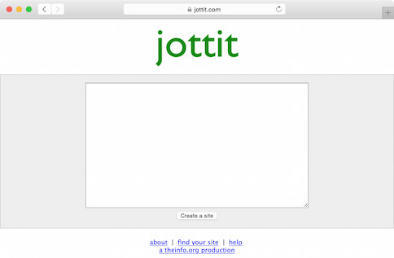
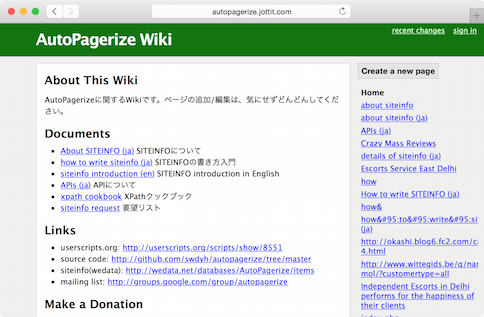

@swdyh
Aaron Swartzっていうひとがいて、JottitっていうシンプルでかっこいいWikiサービスをつくってた


www.jottit.com 2007/09 (Simon Carstensen and Aaron Swartz)

Aaron Swartzの新しいプロジェクト Jottit。 機能はごく単純なwiki (というかwikifarm) なんだけど、インタフェースが秀逸。 less is moreの精神。
shiro http://blog.practical-scheme.net/shiro/20070915b-jottit
匿名でページ作成、編集ができるwiki サービスって意外と無いような気がするので、存続してほしいですね
youpy